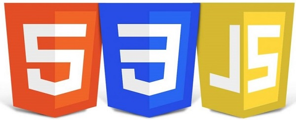

Sobre mí
Soy desarradora web junior especializada en front-end, con experiencia en HTMl, CSS y Javascript . Me apasiona crear interfaces funcionales, accesibles y centradas en el usuario, resolviendo problemas de forma creativa y trabajando en equipo. Busco seguir aprendiendo nuevas tecnologias para desarrollar proyectos innovadores que generen un impacto positivo.
